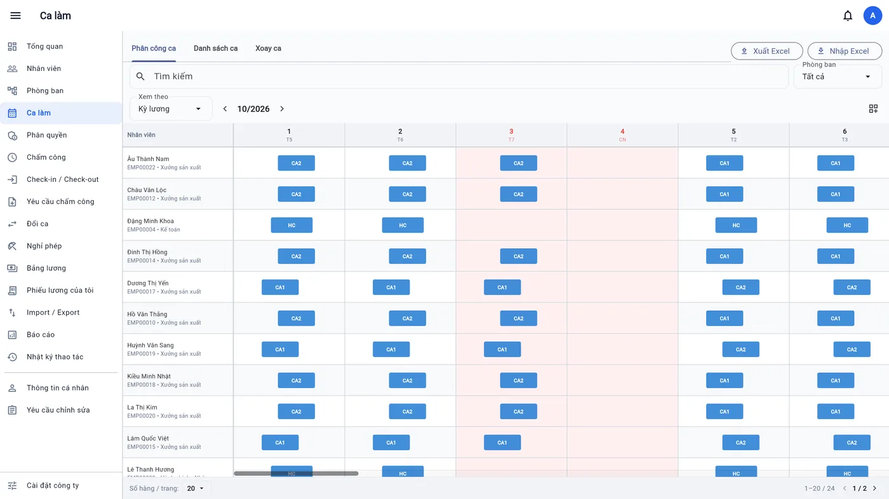
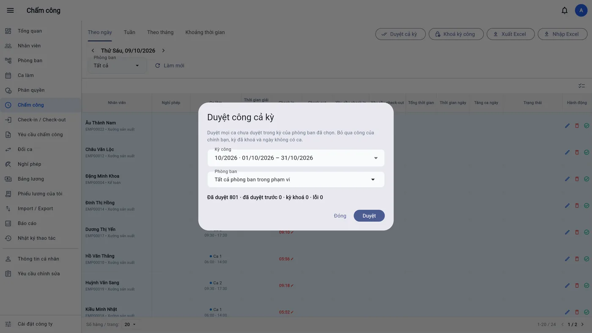
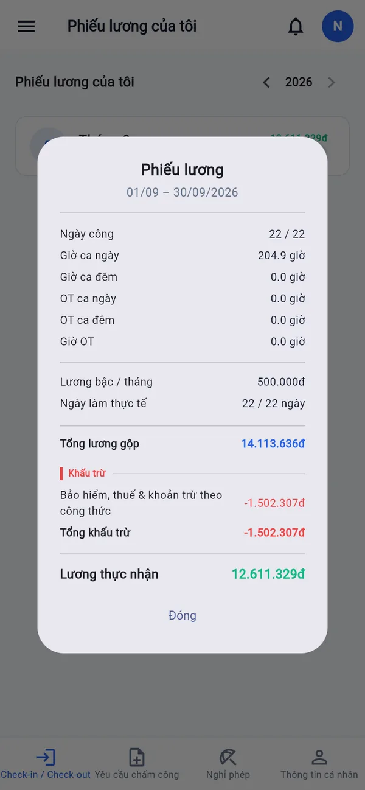

Chấm công, xếp ca, nghỉ phép và tính lương gọn trong một ứng dụng
Phần mềm nhân sự cho doanh nghiệp Việt Nam. Nhân viên chấm công bằng điện thoại, quản lý duyệt bằng một chạm,
bảng lương tự tính đúng quy định bảo hiểm và thuế — trên điện thoại Android và trình duyệt web.
Vì sao cần BossKinNhững việc đang tốn thời gian mỗi tháng
Chấm công hộ, quên chấmMáy vân tay, sổ giấy dễ chấm hộ, khó tra lại.→ Chấm bằng điện thoại, kiểm tra GPS và đúng máy
Cuối tháng đối chiếu ExcelGom công, phép, tăng ca từ nhiều nơi mất vài ngày.→ Duyệt và khoá kỳ công bằng một nút
Tính lương dễ saiBảo hiểm có trần, thuế luỹ tiến, người phụ thuộc…→ Tự tính theo quy định, có phiếu lương
Đơn từ qua tin nhắnXin nghỉ, đổi ca, sửa giờ thất lạc, không ai theo dõi.→ Gửi và duyệt ngay trên app
Tính năng chínhMọi việc nhân sự hằng ngày, ở một chỗ
Chấm công trên điện thoại
Chỉ chấm trong bán kính quanh văn phòng / phòng ban
Mỗi tài khoản gắn một điện thoại — không chấm hộ
Từ chối vị trí giả lập; không cần máy chấm công

Xếp ca và nghỉ phép
Ca qua đêm, ca gãy, ca linh hoạt; mẫu xoay ca, đổi ca
Lịch làm việc theo phòng ban, ngày lễ theo năm
Sổ phép tự trừ đúng ngày có ca, tự cộng hằng tháng

Chốt công cả kỳ bằng một nút
Duyệt công 300 nhân viên trong chưa đầy một phút
Đi muộn, về sớm, tăng ca ngày / đêm tính tự động
Khoá kỳ: số liệu đã chốt không ai sửa được

Tính lương tự động
BHXH, BHYT, BHTN có trần; thuế TNCN luỹ tiến, người phụ thuộc
Lương, phụ cấp từ hợp đồng; công thức tự đặt
Phiếu lương ngay trên điện thoại nhân viên
Hồ sơ nhân sựĐầy đủ hồ sơ, không cần thêm phần mềm
Hợp đồng lao động
Thử việc, xác định và không xác định thời hạn, phụ lục tăng lương, phụ cấp. Nhắc trước khi hợp đồng hết hạn.
Quá trình công tác
Chuyển phòng, thăng chức, đổi bậc lương theo ngày hiệu lực; sơ đồ tổ chức theo quản lý trực tiếp.
Thuế & bảo hiểm
Mã số thuế, sổ BHXH, người phụ thuộc. Số nhạy cảm được che với người không có quyền xem.
Giấy tờ nhân sự
CCCD, bằng cấp, hợp đồng đã ký lưu riêng tư; báo giấy tờ sắp hết hạn hoặc còn thiếu.